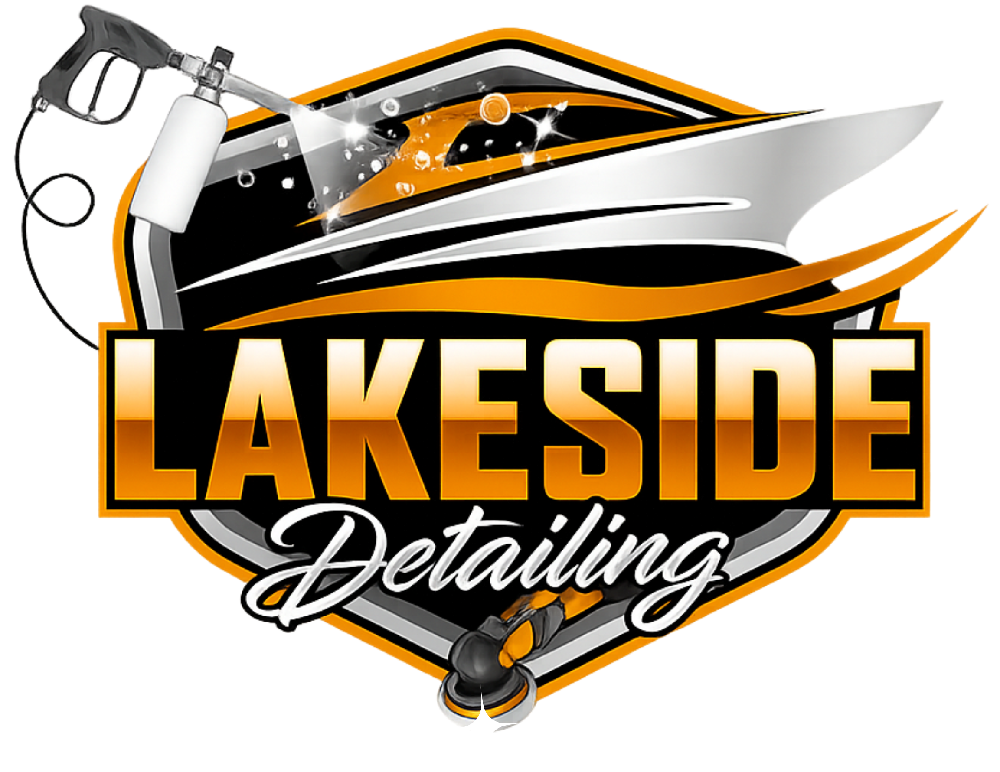

Professional mobile boat detailing serving Kansas City metro lakes. We come to you and restore your boat’s shine.
View PackagesWe proudly service Kansas City metro lakes and surrounding marinas. Mobile service — we come directly to your dock, driveway, or storage facility.